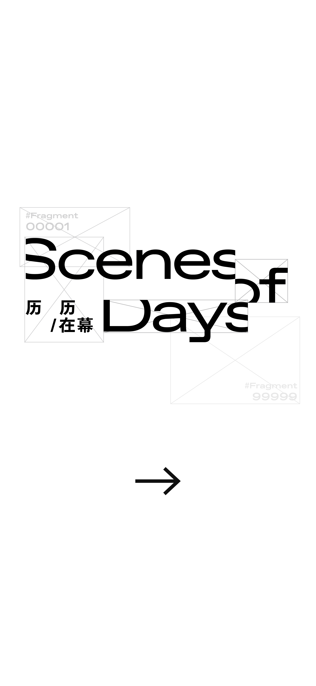
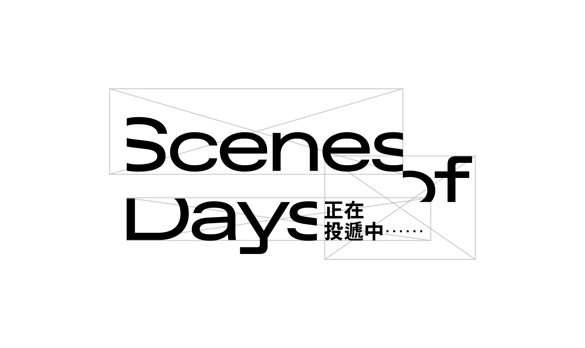
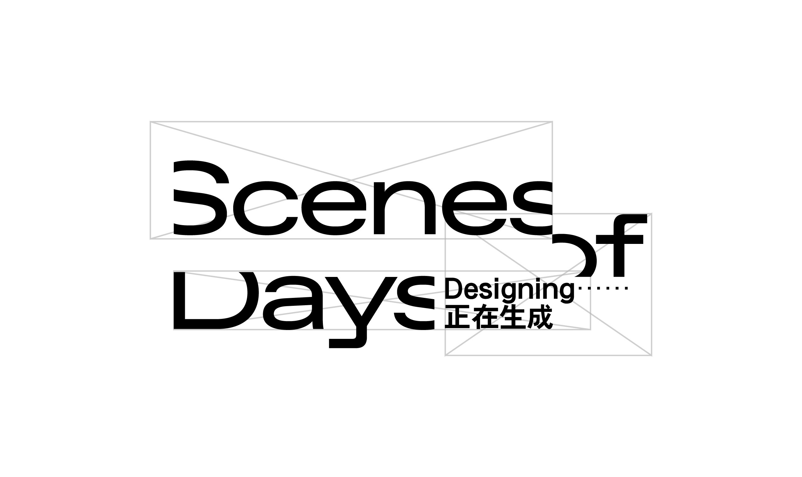
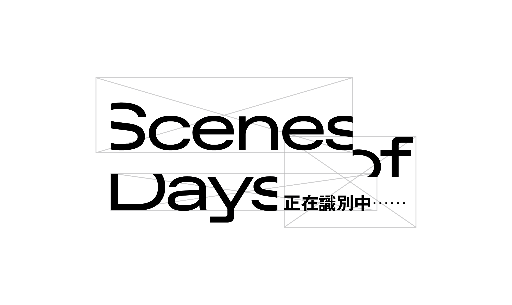

—


「寻找日常仪式感的最大公约数」
分享一个具有仪式感的日常
点击此处上传图片
这一刻更接近于……
系统会根据图片自动识别分类，你也可以手动调整

世界的变化
光线、天气、时间与瞬间变化带来的感知
生活的停留
物件、陪伴与日常痕迹留下的感知
人与关系的流动
行动、相遇与人与人之间流动的感知
拍摄日期（已自动填入，请确认或修改）
拍摄地点
拍摄感想
生成我的专属日历
正在生成专属日历，请稍候...
生成结果
点击此处收起面板
图像个性化调整
月历排版 Calendar Style
空间螺旋
倾斜椭圆
方形绕排
多段回环
图像处理效果 Effect Style
渐变映射 Gradient Map
线性等高线 Line Contour
图案填充 Pattern Fill
像素拉伸 Pixel Stretch
重新取色
重新随机月历造型
参数 A
参数 B
参数 C
投稿到公共图版
保存图片
重新制作